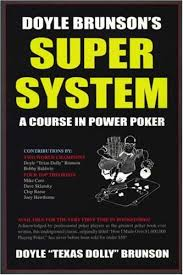
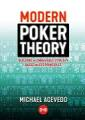

Study Tools
| Super System by Doyle Brunson |
Recommended Level to Read - Beginner |
Info - Iconic book in the Poker world, everyone must read at some point if they take Poker serious. Sort of outdated but helps get the basics down. |
 |
| Raise Your Edge Courses |
Reccomended Level to Enroll - Intermediate |
Info - Courses specified to what you want to play (Cash, Tournaments, Sit-n-Go). Written by legendary player bencb789, it outlines general strategy and has dozens of hours of video content, preflop charts, and an active, helpful community. |
|
| Modern Poker Theory by Michael Acevedo |
Reccomended Level to Read - Advanced |
Info - Modern Poker Theory is a comprehensive, rigorous guide to the most important aspects of No-Limit Hold’em. It is based around an in-depth examination of what is meant by game theory optimal play (GTO) and how it can be applied at the table. |
 |
Recommended Poker Sites (US)
| Americas Cardroom |
Pros - Wide variety of game selection, soft player pool, constant action, decent rakeback, large events |
Cons - Bad graphics, poor handling of collusion, bots, there are lots of pros/sharks at higher stakes |
My Rank - #1 (Click for Website) |
| Ignition/Bovada |
Pros - Very good graphics, soft player pool, no worry of collusion, decent series, semi-diverse game selection, no sharks/pros |
Cons - Tournaments run like turbos, not a huge player pool, no rakeback, very few bonuses, weird schedule |
My Rank - #2 (Click for Website) |
| Others (Intertops, Global, BetOnline, SportsBettingPoker) |
Pros - Extremely soft fields, no sharks or pros, great for lowstakes/microstakes |
Cons - Not many players, oftentimes cannot find table, bad software, unviable for regular grinding |
My Rank - #3-#6 (No need to grind on these sites) |